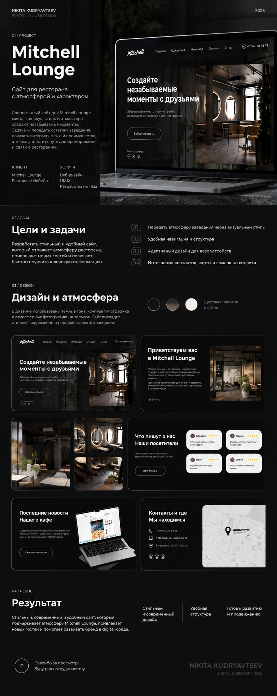
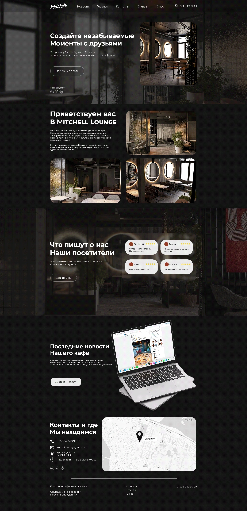

02 / Web · UI/UX
Mitchell
Lounge
Сайт для ресторана с атмосферой и характером. Визуальная система, структура и подача, которые передают настроение места еще до визита.

Передать атмосферу
через digital.
Собрал сайт вокруг характера заведения: темная визуальная среда, крупная типографика, фотографии интерьера и понятные сценарии для посетителя.
Структура должна одновременно знакомить с пространством, помогать принять решение о визите и быстро находить контакты, отзывы и другие важные разделы.
От первого экрана
до контакта.
Продумал иерархию блоков, навигацию, CTA и последовательность просмотра.
Темная палитра, контрастная типографика, фотографии и единый характер интерфейса.
Атмосфера, отзывы, новости, контакты и карта собраны в одну понятную историю.
Система рассчитана на разные размеры экрана и сохранение акцентов на мобильных устройствах.

Главная страница и контентная система проекта.
Сайт, который
передает место.
Вместо обычной страницы ресторана получилась цельная digital-среда: атмосфера, информация и действие работают в одной композиции.